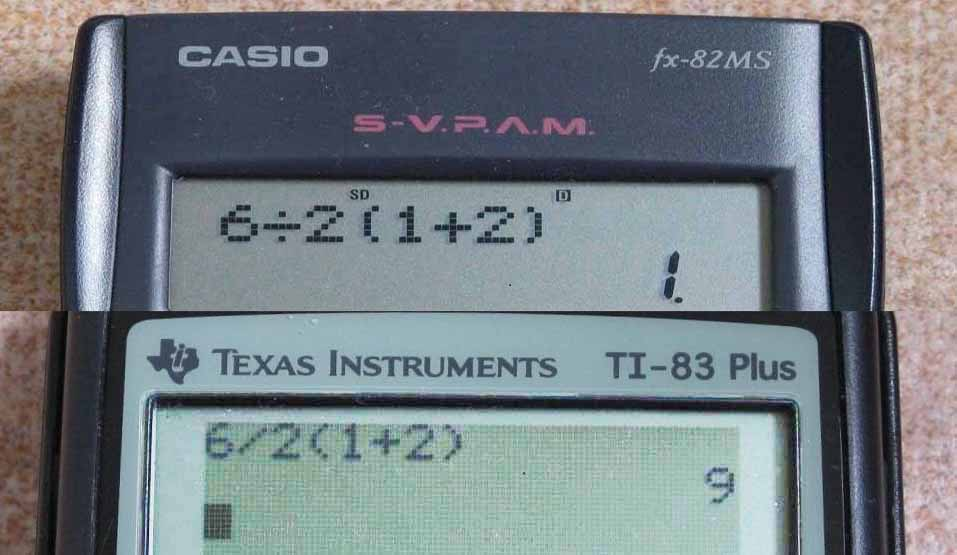

Julia Basics
2025-01-05
Why Julia?
author: Stefan Karpinski
source: github.com
license: CC BY-NC-SA 4.0
Julia is a modern programming language that is commonly used for numerical analysis and scientific computing. It combines the speed of languages like C++ or Fortran with the ease of use of Matlab or Python. This is because Julia was designed to solve the “two-language problem”: A lot of software is often developed in a dynamic language like Python and then re-implemented in a statically typed language for better performance. With Julia, you get the best of both worlds:
Julia walks like Python, and runs like C++.
Julia test:
Julia packages test:
Literature
Recommended Textbooks
Other Resources:
- Official Documentation
- Course Julia for Optimization and Learning by the University of Prague
Warning
This course is fairly fast-paced.
It is assumed that the reader is already familiar with a programming language such as MATLAB, Python or C++.
I will be making comparisons to these languages throughout the course.
Getting Started
Let’s start with a simple hello-world. The print function works exactly like it does in Python:
There is also the println() command, which is exactly the same except that it ends with a newline character.
Basic Math
Of course, you can use Julia like a calculator:
Note that division implicitly converts the input into float; if you want to do integer division, use div(n, m).
Julia provides a very flexible system for naming variables. In the Julia REPL, you can write mathematical symbols and other characters with a tab; for example, the Greek letter π can be typed via \pi<TAB>.
This makes it possible to translate mathematical formulas into code in a very elegant way.
There are alot of built-in math functions:
You might be wondering what happens when you try to overwrite a built-in function or symbol:
Dynamic Binding
Like Python, Julia is a dynamically typed language. This means that variables do not have a fixed data type like in C++, but can point to different data via dynamic binding.
Consider two variables, x and y. After assigning y to x, both variables point to the same memory location; no data is being copied.

Dynamic Variable Binding
Figure was created with app.diagrams.net and is hereby licensed under Public Domain (CC0)
In Python you can use the id() operator to see what’s actually going on:
As you can see, after the assignment, both variables have the same memory address. Something like that would not be possible in C++.1
This distinction may seem trivial, but has some important implications when dealing with mutable types, whose contents can be changed:
As no copy is being made, any change to variable a will also affect variable b. To actually make a deep copy, use the deepcopy() command1:
Warning
For performance reasons, avoid binding values of different types to the same variable.
Code that avoids changing the type of a variable is called type stable.
Numbers in Julia
You can see the type of a variable with the typeof() operator:
Julia uses 64 bits for integers and floats by default. Other types available are:
Int8, Int16, Int32, Int64, Int128, BigInt
UInt8, UInt16, UInt32, UInt64, UInt128
Float16, Float32, Float64, BigFloatTo define a variable of a given size, use x = int16(100). For example, to define an integer of arbitrary length, use
As specified in the IEEE754 standard, floating point numbers support inf and NaN values.
Floating point numbers can only be approximated, so a direct comparison using a==b may give unexpected results:
This is a general problem with floating point numbers, and exists in other programming languages as well.
The machine precision can be obtained with eps(), which gives the distance between 1.0 and the next larger representable floating-point value:
Using that, we can implement a function isapprox(a, b) to test whether to numbers are approximately equal:
Numerical Literal Coefficients
When multiplying variables with a coefficient, you can omit the multiplication symbol *.
As a consequence, coefficients have a higher priority than other operations (“multiplications via juxtaposition”):

{kind=link}
Overflow Behaviour
As in other programming languages, exceeding the maximum representable value of a given type results in wraparound behaviour:
In this sense, calculating with integers is always a form of modulo arithmetic.
Control Flow
Control structures such as branches and loops are easy to implement in Julia; the syntax is very similar to MATLAB:
Just as in C++, Julia supports the ternary if statement:
Multiple logical conditions can be combined with basic comparison operators:
Loops
To iterate over a range or an array, use a for-each loop:
This can be used to iterate over a specific range:
Exception Handling
Functions
Simple functions can be defined via:
More advanced functions are defined using the function keyword:
Note that we use the @assert macro to ensure that the arguments are positive.
Functions can be applied element-wise to arrays using the dot notation, f.(x):
The same can be achieved with the map(f, arr) function:
Optional Arguments
Functions in Julia can have positional arguments and keyword arguments, which are separated with a semicolon ;.
Varargs Functions
Sometimes it is convenient to write functions which can take an arbitray number of arguments. Such a function is called varargs functions. You can define a varargs function by following the last positional argument with an ellipsis:
Note
Note that the varargs mechanism works differently in Julia than in C++. In C++, the expression args + ... is shorthand for recursion, meaning that the expression is evaluated to ((((x1 + x2) + x3) + x4) + ... ).
In Julia, however, it is much simpler: the varargs argument is just a tuple that you can iterate over.
Naming convention
Important
As a convention in Julia, functions that modify an argument should have a ! at the end.
For example, sort() and sort!() both sort an array; however, one returns a copy, and the other functions sorts the array in place.
Exercise
Implement a function which calculates the sine of a real number x.
\[ \sin(x) = \sum_{k=0}^\infty (-1)^k \frac{x^{2k+1}}{(2k+1)!} \]